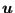
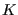
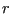
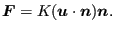
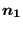

The pipe section is circular and is characterized by its outer radius and its thickness (in that order). There are 8 integration points equally distributed along the circumference. In local coordinates, the radius at which the integration points are located is , where ,  being the inner radius and  the outer radius. The weight for each integration point is given by  [12].